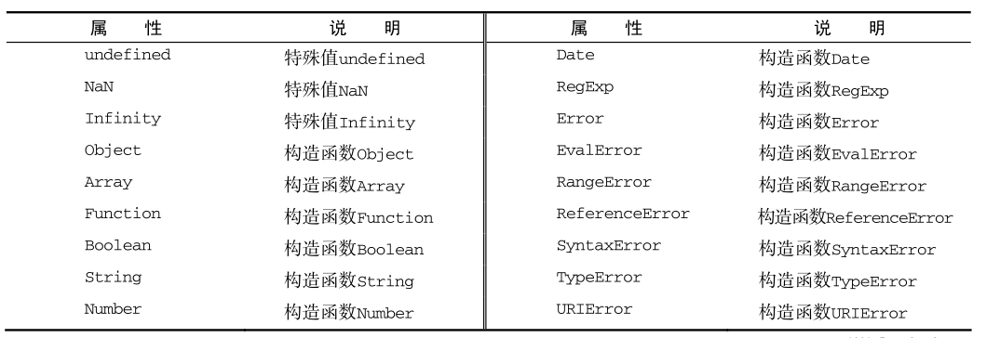

- 1 JavaScript简介
- 1.1 JavaScript简介
- 1.2 在HTML中使用JavaScript
- 3 变量、作用域和内存问题
- 3.1 基本类型和引用类型的值
- 3.2 执行环境及作用域
- 3.3 垃圾收集
- 6 函数表达式
- 6.1 递归
- 6.2 闭包
- 6.3 模仿块级作用域
- 6.3 私有变量
1 JavaScript简介
1.1 JavaScript简介
一个完整的 JavaScript 实现应该由下列三个不同的部分组成:
ECMAScript定义：ECMAScript 仅仅是一个描述，定义了脚本语言的所有属性、方法和对象，是宿主环境中脚本语言的国际 Web 标准，由 ECMA-262 定义。
宿主环境：宿主环境一般由外壳程序创建和维护，它不仅仅为JavaScript语言提供服务，往往一个宿主环境中可能运行很多种脚本语言。宿主环境不仅提供基本的ECMAScript 实现，同时也会提供该语言的扩展，以便语言与环境之间对接交互。
ECMAScript与浏览器关系：没有依赖关系，Web 浏览器只是 ECMAScript 实现可能的宿主环境之一。
1.2 在HTML中使用JavaScript
<script>元素：有6个属性。常用的src、charset、type、defer、async。
使用<script>元素的两种方式：直接在页面中嵌入 JavaScript 代码和包含外部 JavaScript 文件。
<script type="text/javascript">
function sayHi(){
alert("Hi!");
}
</script>
<script type="text/javascript" src="example.js"></script
<script>元素放的位置：放到<head>标签里（JavaScript 代码都被下载、 解析和执行完成以后，页面内容显示。）；放到<body>标签里（一般，页面内容呈现，解析JavaScript代码，提高用户体验）。
延迟脚本: defer 属性，脚本会被延迟到整个页面都解析完毕后再运行。相当于告诉浏览器立即下载，但延迟执行。（最好包含一个延迟脚本，有先后）
<script type="text/javascript" defer="defer" src="example.js"></script
异步脚本: async 属性，指定 async 属性的目的是不让页面等待两个脚本下载和执行，从而异步加载页面其他内容。（脚本之间互不依赖，无先后，在load前执行）
2 基本概念
2.1 语法
区分大小写：
标识符：变量、函数、属性的名字，或者函数的参数。不能把关键字、保留字、 true 、 false 和 null 用作标识符。
注释：
// 单行注释
/*
* 这是一个多行
* （块级）注释
*/
严格模式：
"use strict";
语句：ECMAScript 中的语句以一个分号结尾；如果省略分号，则由解析器确定语句的结尾。
2.2 关键字和保留字
2.3 变量
变量定义：var message;（？存的值）
var message = "hi",
found = false,
age = 29;
function test(){
var message = "hi";
}
test();
alert(message);
//undefined
function test(){
message = "hi";
}
test();
alert(message);
//hi
2.4 数据类型
简单数据类型（基本）： Undefined 、Null 、Boolean 、Number和String 。
复杂数据类型： Object ，Object 本质上是由一组无序的名值对组成的。
typeof操作符：鉴于 ECMAScript 是松散类型的，因此需要有一种手段来检测给定变量的数据类型，typeof 就是负责提供这方面信息的操作符。CMA-262 规定任何在内部实现 [[Call]] 方法的对象都应该在应用 typeof 操作符时返回 "function" 。
var message = "some string";
alert(typeof message);
alert(typeof(message));
alert(typeof 95);
alert(typeof null);
alert(typeof undefined);
alert(typeof age);
//answer: string、string、number、object、undefined、undefined
Undefined 类型：Undefined 类型只有一个值，即特殊的 undefined 。正式区分空对象指针与未经初始化的变量。
var message;
alert(message);
alert(age);
//undefined、error
Null 类型：Null 类型只有一个值，即特殊的 null 。 null 值表示一个空对象指针。
直接检查 null 值就可以知道相应的变量是否已经保存了一个对象的引用
if (car != null){
// 对 car 对象执行某些操作
}
undefined 值是派生自 null 值的。
alert(null == undefined); //true
Boolean 类型：两个字面值： true 和 false （区分大小写）。
转型函数 Boolean()：两个字面值： true 和 false （区分大小写）。
var message = "Hello world!";
var message = "0";
var message = " ";
var message = false;
var message = "";
var message = 0;
var message = undefined;
var message = null;
var message = NaN;
if (message){
alert("Value is true");
}
//answer:true、true、true、false、false、false、false、false、false
Number 类型：使用 IEEE754 格式来表示整数和浮点数值（浮点数值在某些语言中也被称为双精度数值）。ECMA-262 定 义了不同的数值字面量格式：八进制（0），十进制，十六进制（0x）。
浮点数值：
var a = 0.1;
var b = 0.2;
if (a + b == 0.3){
alert("You got 0.3.");
}
数值范围：Number.MIN_VALUE中存着最小数值：5e-324；Number.MAX_VALUE存着最大数值：1.7976931348623157e+308。如果超出范围，转换为Infinity 值（有正负）。
isFinite()：在参数位于最小与最大数值之间时会返回true。
var result = Number.MAX_VALUE + Number.MAX_VALUE;
alert(isFinite(result)); //false
NaN：非数值（Not a Number），数值用于表示一个本来要返回数值的操作数未返回数值的情况（这样就不会抛出错误了）。任何数值除以 0会返回 NaN。
alert(NaN == NaN);
//false
isNaN()：接受一个参数，函数会确定这个参数是否“不是数值”。
alert(isNaN(NaN));
alert(isNaN("blue"));
alert(isNaN("10sss"));
alert(isNaN(10));
alert(isNaN("10"));
alert(isNaN(false));
//answer：true、true、true、false、false、false
数值转换 Number()：
var num1 = Number("Hello world!");
var num2 = Number("");
var num3 = Number("000011");
var num4 = Number(true);
var num5 = Number(null);
var num6 = Number(undefined);
var num7 = Number(0xf);
//answer：NaN、0、11、1、0、NaN、15
数值转换 parseInt() ：支持进制，按序解析
var num1 = parseInt("1234blue");
var num2 = parseInt("");
var num2 = parseInt(" 12");
var num3 = parseInt("0xA");
var num4 = parseInt(22.5);
var num4 = parseInt(-22.5);
var num5 = parseInt("070");//es5 不支持八进制，忽略0
var num6 = parseInt("70");
var num7 = parseInt("0xf");
var num8 = parseInt("10", 2);
var num9 = parseInt("10", 8);
var num10 = parseInt("10", 10);
var num11 = parseInt("10", 16);
//answer：1234、0、12、10、22、-22、70、70、15、2、8、10、16
数值转换 parseFloat()：第一个字符（位置 0）开始解析每个字符。而且也是一直解析到字符串末尾，或者解析到遇见一个无效的浮点数字字符为止。不支持进制。
var num1 = parseFloat("1234blue");
var num2 = parseFloat("0xA");
var num3 = parseFloat("22.5");
var num4 = parseFloat("22.34.5");
var num5 = parseFloat("0908.5");
var num6 = parseFloat("3.125e7");
//answer：1234、0、22.5、22.34、908.5、31250000
String 类型：String 数据类型包含一些特殊的字符字面量，也叫转义序列，用于表示非打印字符，或者具有其 他用途的字符。
var text = "This \u03a3.";
alert(text.length);
//6
转换字符串 toString()：数值、布尔值、对象和字符串值有这个方法，但 null 和 undefined 值没有这个方法。传递基数可以支持进制。
var age = 11;
var ageAsString = age.toString();//11
var found = true;
var foundAsString = found.toString();//true
var num = 10;
alert(num.toString());//10
alert(num.toString(2));//1010
alert(num.toString(8));//12
alert(num.toString(10));//10
alert(num.toString(16));//a
转型函数 String()：能够将任何类型的值转换为字符串。
var value1 = 10;
var value2 = true;
var value3 = null;
var value4;
alert(String(value1));
alert(String(value2));
alert(String(value3));
alert(String(value4));
//answer: 10、true、null、undefined
Object 类型：ECMAScript 中的对象其实就是一组数据和功能的集合。
var o = new Object();
2.5 操作符
一元操作符：++、--、+、-。
var s1 = "2";
var s2 = "z";
var b = false;
var f = 1.1;
var o = {
valueOf: function() {
return -1;
}
};
s1++; // 值变成数值 3
s2++; // 值变成 NaN
b++; // 值变成数值 1
f--; // 值变成 0.10000000000000009（由于浮点舍入错误所致）
o--; // 值变成数值-2
逻辑非：逻辑非操作符由一个叹号（！）表示，可以应用于 ECMAScript 中的任何值。逻辑非操作符首先会将它的操作数转换为一个布尔值，然后再对其求反。
alert(!false); // true
alert(!"blue"); // false
alert(!0); // true
alert(!NaN); // true
alert(!""); // true
alert(!12345); // false
alert(!!"blue"); //true
alert(!!0); //false
alert(!!NaN); //false
alert(!!""); //false
alert(!!12345); //true
加性操作符 +：
var num1 = 5;
var num2 = 10;
var message = "The sum of 5 and 10 is " + num1 + num2;
alert(message);
var a = 1 + String(undefined);
alert(a) //1undefined
var a = undefined + 1;
alert(a) //NaN
//与书上不符，undefined没有自动调用String()。
加性操作符 -：
var result1 = 5 - true; // 4，因为 true 被转换成了 1
var result2 = NaN - 1; // NaN
var result3 = 5 - 3; // 2
var result4 = 5 - ""; // 5，因为"" 被转换成了 0
var result5 = 5 - "2"; // 3，因为"2"被转换成了 2
var result6 = 5 - null; // 5，因为 null 被转换成了 0
字符串比大小：按序比较字符编码
var result = "23" < "3"; //true
2.6 语句
for-in 语句：for-in 语句是一种精准的迭代语句，可以用来枚举对象的属性。ECMAScript 对象的属性没有顺序。建议在使用 for-in 循环之前，先检测确认该对象的值不是 null 或 undefined（兼容性问题）。
if(window != null && window != undefined){
for (var a in window) {
document.write(a);
}
}
label 语句：在代码中添加标签。由break或者continue语句引用。返回代码中的特定位置。在循环嵌套下使用。
var num = 0;
outPoint:
for (var i = 0 ; i < 10 ; i++){
for (var j = 0 ; j < 10 ; j++){
if( i == 5 && j == 5 ){
break outPoint;
}
num++;
}
}
alert(num); // 循环在 i 为5，j 为5的时候跳出双循环，返回到outPoint层继续执行，输出 55
var num = 0;
outermost:
for (var i=0; i < 10; i++) {
for (var j=0; j < 10; j++) {
if (i == 5 && j == 5) {
continue outermost;
}
num++;
}
}
alert(num); //95
with 语句：暂时改变作用域链、减少的重复输入。with关键字会将with对应的对象添加到当前其所在函数作用域链的头部位置。
with(location){
var qs = search.substring(1);
var hostName = hostname;
var url = href;
}
var qs = location.search.substring(1);
var hostName = location.hostname;
var url = location.href;
({
x: 10,
foo: function () {
function bar() {
console.log(x);
console.log(y);
console.log(this.x);
}
with (this) {
var x = 20;
var y = 30;
bar.call(this);
}
}
}).foo();
//answer:und 20 30
switch 语句：在比较值时使用的是全等操作符。
2.7 函数
return语句：函数会在执行完 return 语句之后停止并立即退出。
var result = sum(5, 10);
function sum(num1, num2) {
return num1 + num2;
alert("Hello world"); // 永远不会执行
}
function sayHi(name, message) {
return;
alert("Hello " + name + "," + message); //永远不会调用
}
alert(sayHi()) //undefined
arguments 对象： ECMAScript 中的参数在内部是用一个数组来表示，在函数体内可以通过 arguments 对象来访问这个参数数组，从而获取传递给函数的每一个参数。 arguments 对象的 length 属性可以获知有多少个参数传递给了函数。（模拟重载）
function howManyArgs() {
alert(arguments.length);
}
howManyArgs("string", 45); //2
howManyArgs(); //0
howManyArgs(12); //1
function doAdd() {
if(arguments.length == 1) {
alert(arguments[0] + 10);
} else if (arguments.length == 2) {
alert(arguments[0] + arguments[1]);
}
}
doAdd(10); //20
doAdd(30, 20); //50
function doAdd(num1, num2) {
arguments[1] = 10;
alert(arguments[0] + num2);
}
doAdd(30, 20); //40
//它的值永远与对应命名参数的值保持同步，内存空间是独立的，但它们的值会同步
3 变量、作用域和内存问题
3.1 基本类型和引用类型的值
ECMAScript 变量存的值：基本类型值和引用类型值。基本类型值指的是简单的数据段（按值访问），而引用类型值指那些可能由多个值构成的对象（按引用访问，不能直接操作）。
复制变量值：
var num1 = 5;
var num2 = num1;
var obj1 = new Object();
var obj2 = obj1;
obj1.name = "Nicholas";
alert(obj2.name); //"Nicholas"
var person1 = {};
var person2 = {};
console.log(person1 == person2);
//answer：false
传递参数：ECMAScript 中所有函数的参数都是按值传递的。
function setName(obj) {
obj.name = "Nicholas";
obj = new Object();
obj.name = "Greg";
}
var person = new Object();
setName(person);
alert(person.name);
//"Nicholas"
instanceof 操作符：通过原型链识别。
result = variable instanceof constructor
alert(person instanceof Object); // 变量 person 是 Object 吗？
3.2 执行环境及作用域
执行环境：执行环境定义了变量或函数有权访问的其他数据，决定了它们各自的行为。
变量对象：每个执行环境都有一个与之关联的变量对象（variable object），环境中定义的所有变量和函数都保存在这个对象中。据 ECMAScript 实现所在的宿主环境不同，表示执行环境的对象也不一样。
ECMAScript 程序中的执行流：当执行流进入一个函数时，函数的环境就会被推入一个环境栈中。而在函数执行之后，栈将其环境弹出，把控制权返回给之前的执行环境。
作用域链：保证对执行环境有权访问的所有变量和函数的有序访问。
var a = 1;
//全局作用域，只能访问全局变量，也就是a变量
function A(){
var b = 2;
//A函数的局部作用域，可以访问到a，b变量，但是访问不到c变量
function B(){
//B函数局部作用域，可以访问到a，b，c变量
var c = 3;
}
}
活动对象：如果这个环境是函数，则将其活动对象（activation object）作为变量对象。活动对象在最开始时只包含一个变量，即 arguments 对象（这个对象在全局环境中是不存在的）。
闭包：？
3.3 垃圾收集
标记清除：JavaScript 中最常用的垃圾收集方式是标记清除（mark-and-sweep）。算法的思想是给当前不使用的值加上标记，然后再回收其内存。
引用计数：算法的思想是跟踪记录所有值被引用的次数。IE 的 JavaScript 引擎是使用标记清除策略来实现的，但JavaScript 访问的 COM 对象依然是基于引用计数策略的。
内存泄漏：IE中。闭包会引用包含函数的整个活动对象，而其中包含着 element 。
function assignHandler(){
var element = document.getElementById("someElement");
var id = element.id;
element.onclick = function(){
alert(id);
};
element = null;
}
4 引用类型
引用类型：引用类型是一种数据结构，用于将数据和功能组织在一起。
引用类型的值：引用类型的值（对象）是引用类型的一个实例。
4.1 Object 类型
创建Object实例：
var person = new Object();
person.name = "Nicholas";
person.age = 29;
var person = {}; //与 new Object() 相同
person.name = "Nicholas";
person.age = 29;
//对象字面量，向函数传递大量可选参数
var person = {
name : "Nicholas",
age : 29
};
访问对象的属性：
person["name"];
person.name;
4.2 Array 类型
Array 类型：ECMAScript 数组的每一项可以保存任何类型的数据。
创建数组：
var colors = new Array(20);
var colors = new Array("red", "blue", "green");
var colors = Array(3);
var names = Array("Greg");
var colors = ["red", "blue", "green"];
isArray()：
if (Array.isArray(value)){
//对数组执行某些操作
}
join()方法：
var colors = ["red", "green", "blue"];
alert(colors.join(",")); //red,green,blue
alert(colors.join("||")); //red||green||blue
数组方法： push()、pop()、shift()、unshift()、reverse()、sort()、concat()、slice()、splice()、indexOf()、lastIndexOf()、every()、filter()、forEach()、map()、some()、 reduce()、reduceRight()。
4.3 Date 类型
4.4 RegExp 类型
创建正则表达式：
/*
* 匹配第一个"bat"或"cat"，不区分大小写,字面量形式来定义
*/
var pattern1 = /[bc]at/i;
/*
* 与 pattern1 相同，只不过是使用构造函数创建的
*/
var pattern2 = new RegExp("[bc]at", "i");
RegExp 实例属性：
var pattern1 = /\[bc\]at/i;
alert(pattern1.global); //false
alert(pattern1.ignoreCase); //true
alert(pattern1.multiline); //false
alert(pattern1.lastIndex); //0
alert(pattern1.source); //"\[bc\]at"
exec()：该方法是专门为捕获组而设计的。参数：应用模式的字符串，返回数组（多了index、input属性）。
var text = "cat, bat, sat, fat";
var pattern1 = /.at/;
var matches = pattern1.exec(text);
alert(matches.index); //0
alert(matches[0]); //cat
alert(pattern1.lastIndex); //0
text()：
var text = "000-00-0000";
var pattern = /\d{3}-\d{2}-\d{4}/;
if (pattern.test(text)){
alert("The pattern was matched.");
}
RegExp 构造函数属性：
var text = "this has been a short summer";
var pattern = /(.)hort/g;
/*
* 注意：Opera 不支持 input、lastMatch、lastParen 和 multiline 属性
* Internet Explorer 不支持 multiline 属性
*/
if (pattern.test(text)){
alert(RegExp.input); // this has been a short summer
alert(RegExp.leftContext); // this has been a
alert(RegExp.rightContext); // summer
alert(RegExp.lastMatch); // short
alert(RegExp.lastParen); // s
alert(RegExp.multiline); // false
}
//用于存储捕获组的构造函数属性
var text = "this has been a short summer";
var pattern = /(..)or(.)/g;
if (pattern.test(text)){
alert(RegExp.$1); //sh
alert(RegExp.$2); //t
}
4.5 Function 类型
函数定义：函数声明、函数表达式
alert(sum(10,10));
function sum(num1, num2){
return num1 + num2;
}
alert(sum(10,10));
var sum = function(num1, num2){
return num1 + num2;
};
函数对象的属性caller：这个属性中保存着调用当前函数的函数的引用，如果是在全局作用域中调用当前函数，它的值为 null 。
function outer(){
inner();
}
function inner(){
alert(inner.caller);
}
outer();
//function outer(){
inner();
}
函数对象的属性 length： length 属性表示函数希望接收的命名参数的个数。
函数对象的属性 prototype：是保存它们所有实例方法的真正所在。
函数方法 apply() 和 call()：用途都是在特定的作用域中调用函数，实际上等于设置函数体内 this 对象的值。
window.color = "red";
ar o = { color: "blue" };
function sayColor(){
alert(this.color);
}
sayColor();
sayColor.call(this);
sayColor.call(window);
sayColor.call(o);
//answer：red red red blue
函数方法bind()：这个方法会创建一个函数的实例，其 this 值会被绑定到传给 bind() 函数的值。
window.color = "red";
var o = { color: "blue" };
function sayColor(){
alert(this.color);
}
var objectSayColor = sayColor.bind(o);
objectSayColor();
////blue
4.6 基本包装类型
var s1 = "some text";
var s2 = s1.substring(2);
//每当读取一个基本类型值的时候，后台就会创建一个对应的基本包装类型的对象
创建基本包装类型：在读取模式中访问字符串时，后台都会自动完成下列处理。以上例子为例。
var s1 = new String("some text");
var s2 = s1.substring(2);
s1 = null;
//当代码执行到第二行
基本包装类型生命周期：
var s1 = "some text";
s1.color = "red";
alert(s1.color);
//undefined
String 类型方法： charAt()、charCodeAt()、concat()、slice()、substr()、substring()、indexOf() 、lastIndexOf()、trim()、toLowerCase()、toLocaleLowerCase()、toUpperCase()、toLocaleUpperCase()、match()、search()、 split()、localeCompare()、fromCharCode() 。
Boolean 类型：
var falseObject = new Boolean(false);
var result = falseObject && true;
alert(result);
var falseValue = false;
result = falseValue && true;
alert(result);
//answer：true false
Number 类型方法： toFixed()、toExponential()、toPrecision()。
4.7 单体内置对象
内置对象：由 ECMAScript 实现提供的、不依赖于宿主环境的对象，这些对象在 ECMAScript 程序执行之前就已经存在了。
原生对象：独立于宿主环境的 ECMAScript 实现提供的对象。原生对象就是 ECMA-262 定义的类（引用类型）。
宿主对象：ECMAScript中的“宿主”当然就是我们网页的运行环境，即“操作系统”和“浏览器”。所有非原生对象都是宿主对象（host object），即由 ECMAScript 实现的宿主环境提供的对象。
Global 对象：由 ECMAScript 实现提供的、不依赖于宿主环境的对象，这些对象在 ECMAScript 程序执行之前就已经存在了。
Global 对象方法：encodeURI()、encodeURIComponent()、decodeURI()、decodeURIComponent()。
Global 对象方法 eval()：。 eval()方法就像是一个完整的 ECMAScript 解析器，它只接受一个参数，即要执行的 ECMAScript（或 JavaScript）字符串。
var msg = "hello world";
eval("alert(msg)"); //"hello world"
Global 对象属性：特殊的值、所有原生引用类型的构造函数。

Math 对象方法：Math.min()、Math.max()、Math.ceil()、Math.floor()、Math.round()、random()。
5 面向对象的程序设计
5.1 理解对象
属性类型-数据属性：[[Configurable]]、[[Enumerable]]、[[Writable]]、[[Value]] 。
属性类型-访问器属性：[[Configurable]]、[[Enumerable]]、[[Get]]、[[Set]] 。
5.2 创建对象
工厂模式：
function createPerson(name, color){
return{
name : name,
color : color
}
}
var person1 = createPerson("Nicholas", "red");
var person2 = createPerson("Greg", "blue");
构造函数模式：
构造函数：其实就是一个普通函数，但是内部使用了this变量。对构造函数使用new运算符，就能生成实例，并且this变量会绑定在实例对象上。
function Cat(name,color){
this.name=name;
this.color=color;
}
var cat1 = new Cat("大毛","黄色");
var cat2 = new Cat("二毛","黑色");
alert(cat1.name); // 大毛
alert(cat1.color); // 黄色
//cat1和cat2会自动含有一个constructor属性，指向它们的构造函数。
alert(cat1.constructor == Cat); //true
alert(cat2.constructor == Cat); //true
alert(cat1 instanceof Cat); //true
alert(cat2 instanceof Cat); //true
alert(cat1.eat == cat2.eat); //false
原型模式：
prototype 属性：每一个构造函数都有一个prototype属性，指向另一个对象。这个对象的所有属性和方法，都会被构造函数的实例继承。
function Cat(name,color){
this.name = name;
this.color = color;
}
Cat.prototype.type = "猫科动物";
Cat.prototype.eat = function(){alert("吃老鼠")};
var cat1 = new Cat("大毛","黄色");
var cat2 = new Cat("二毛","黑色");
alert(cat1.type); // 猫科动物
cat1.eat(); // 吃老鼠
alert(cat1.eat == cat2.eat); //true
Prototype模式的验证方法-isPrototypeOf()某个proptotype对象和某个实例之间的关系。
alert(cat1.hasOwnProperty("name")); // true
alert(cat1.hasOwnProperty("type")); // false
Prototype模式的验证方法-hasOwnProperty()每个实例对象都有一个hasOwnProperty()方法，用来判断某一个属性到底是本地属性，还是继承自prototype对象的属性。
alert(Cat.prototype.isPrototypeOf(cat1)); //true
alert(Cat.prototype.isPrototypeOf(cat2)); //true
Prototype模式的验证方法-Object.getPrototypeOf()在所有支持的实现中，这个方法返回[[Prototype]]的值。
alert(Object.getPrototypeOf(cat1) == Cat.prototype) //true
alert(Object.getPrototypeOf(cat1).name) //undefined
alert(Object.getPrototypeOf(cat1).type) //猫科动物
Prototype模式的验证方法-in运算符in运算符可以用来判断，某个实例是否含有某个属性，不管是不是本地属性。
alert("name" in cat1); // true
alert("type" in cat1); // true
5.3 继承
JavaScript 原型链：

构造函数的继承：
构造函数绑定：使用call或apply方法，将父对象的构造函数绑定在子对象上。
function Animal(){
this.species = "动物";
}
function Cat(name,color){
Animal.apply(this, arguments);
this.name = name;
this.color = color;
}
var cat1 = new Cat("大毛","黄色");
alert(cat1.species); // 动物
prototype模式：使用prototype属性。
function Animal(){
this.species = "动物";
}
function Cat(name,color){
this.name = name;
this.color = color;
}
Cat.prototype = new Animal();
Cat.prototype.constructor = Cat;
var cat1 = new Cat("大毛","黄色");
alert(cat1.species); // 动物
直接继承prototype：
function Animal(){ }
Animal.prototype.species = "动物";
function Cat(name,color){
this.name = name;
this.color = color;
}
Cat.prototype = Animal.prototype;
Cat.prototype.constructor = Cat;
var cat1 = new Cat("大毛","黄色");
alert(cat1.species); // 动物
alert(Animal.prototype.constructor); // Cat
利用空对象作为中介：
function Animal(){
this.species = "动物";
}
function Cat(name,color){
this.name = name;
this.color = color;
}
var F = function(){};
F.prototype = Animal.prototype;
Cat.prototype = new F();
Cat.prototype.constructor = Cat;
var cat1 = new Cat("大毛","黄色");
alert(cat1.species); // 动物
alert(Animal.prototype.constructor); // Animal
拷贝继承：
function Animal(){ }
Animal.prototype.species = "动物";
function Cat(name,color){
this.name = name;
this.color = color;
}
function extend2(Child, Parent) {
var p = Parent.prototype;
var c = Child.prototype;
for (var i in p) {
c[i] = p[i];
}
c.uber = p;
}
extend2(Cat, Animal);
var cat1 = new Cat("大毛","黄色");
alert(cat1.species); // 动物
非构造函数继承：
object()方法：
var Chinese = {
nation:'中国'
};
var Doctor ={
career:'医生'
};
function object(o) {
function F() {}
F.prototype = o;
return new F();
}
var Doctor = object(Chinese);
Doctor.career = '医生';
alert(Doctor.nation); //中国
浅拷贝：
var Chinese = {
nation:'中国'
};
var Doctor ={
career:'医生'
};
function extendCopy(p) {
var c = {};
for (var i in p) {
c[i] = p[i];
}
c.uber = p;
return c;
}
var Doctor = extendCopy(Chinese);
Doctor.career = '医生';
alert(Doctor.nation); //中国
深拷贝：
var Chinese = {
nation:'中国'
};
var Doctor ={
career:'医生'
};
function deepCopy(p, c) {
var c = c || {};
for (var i in p) {
if (typeof p[i] === 'object') {
c[i] = (p[i].constructor === Array) ? [] : {};
deepCopy(p[i], c[i]);
} else {
c[i] = p[i];
}
}
return c;
}
var Doctor = deepCopy(Chinese);
Chinese.birthPlaces = ['北京','上海','香港'];
Doctor.birthPlaces.push('厦门');
alert(Doctor.birthPlaces); //北京, 上海, 香港, 厦门
alert(Chinese.birthPlaces); //北京, 上海, 香港
6 函数表达式
函数声明与函数表达式：函数声明提升
if(condition){
function sayHi(){
alert("Hi!");
}
} else {
function sayHi(){
alert("Yo!");
}
}
//不正确
var sayHi;
if(condition){
sayHi = function(){
alert("Hi!");
};
} else {
sayHi = function(){
alert("Yo!");
};
}
//正确
6.1 递归
递归：阶乘。
function factorial(num){
if (num <=1) {
return 1;
} else {
return num * factorial(num-1)
}
}
function factorial(num){
if (num <=1) {
return 1;
} else {
return num * arguments.callee(num-1)
}
}
//函数内部对象arguments，严格模式下出错，arguments.callee是指向正在执行的函数的指针
var factorial = (function f(num){
if (num <= 1){
return 1;
} else {
return num * f(num-1);
}
});
6.2 闭包
闭包：有权访问另一个函数作用域中的变量的函数。闭包所保存的是整个变量对象，而不是某个特殊的变量。
function createFunctions(){
var result = new Array();
for (var i=0; i < 10; i++){
result[i] = function(){
return i; //i=10
};
}
return result;
}
function createFunctions(){
var result = new Array();
for (var i=0; i < 10; i++){
result[i] = function(num){
return function(){
return num;
};
}(i);
}
return result;
}
理解闭包：
var name = "The Window";
var object = {
name : "My Object",
getNameFunc : function(){
return function(){
return this.name;
};
}
};
alert(object.getNameFunc()());
//The Window
//匿名函数的执行环境具有全局性，因此其 this 对象通常指向 window 。
var name = "The Window";
var object = {
name : "My Object",
getNameFunc : function(){
var that = this;
return function(){
return that.name;
};
}
};
alert(object.getNameFunc()());
//My Object
//f()-window
function outerFun(){
var a=0;
function innerFun()
{
a++;
alert(a);
}
return innerFun; //注意这里
}
var obj=outerFun();
obj(); //结果为1
obj(); //结果为2
var obj2=outerFun();
obj2(); //结果为1
obj(); //结果为3
使用闭包的注意点：由于闭包会使得函数中的变量都被保存在内存中，内存消耗很大，所以不能滥用闭包，否则会造成网页的性能问题，在IE中可能导致内存泄露。解决方法是，在退出函数之前，将不使用的局部变量全部删除；闭包会在父函数外部，改变父函数内部变量的值。所以，如果你把父函数当作对象（object）使用，把闭包当作它的公用方法（Public Method），把内部变量当作它的私有属性（private value），这时一定要小心，不要随便改变父函数内部变量的值。
6.3 模仿块级作用域
ECMAScript块级作用域：ECMAScript中没有块级作用域。
for (var i=0; i < 10; i++){
doSomething(i);
}
alert(i); //10
ECMAScript模仿块级作用域：匿名函数可以用来模仿块级作用域。
(function(){
//这里是块级作用域（私有作用域）
})();
function outputNumbers(count){
(function () {
for (var i=0; i < count; i++){
alert(i);
}
})();
alert(i); //导致一个错误！
}
块级作用域用处：在全局作用域中被用在函数外部，从而限制向全局作用域中添加过多的变量和函数。减少闭包占用的内存问题。
(function(){
var now = new Date();
if (now.getMonth() == 0 && now.getDate() == 1){
alert("Happy new year!");
}
})();
6.4 私有变量
私有变量：JavaScript 中没有私有成员的概念；所有对象属性都是公有的。私有变量包括函数的参数、局部变量和在函数内部定义的其他函数。
特权方法：有权访问私有变量和私有函数的公有方法。可在函数外部访问。
function MyObject(){
//私有变量和私有函数
var privateVariable = 10;
function privateFunction(){
return false;
}
//特权方法
this.publicMethod = function (){
privateVariable++;
return privateFunction();
};
}